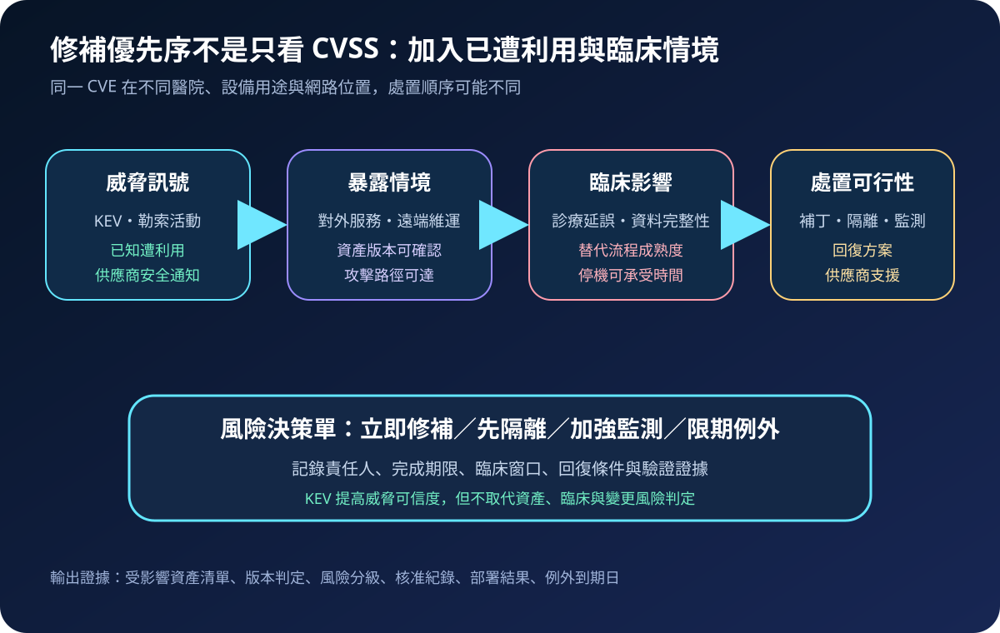
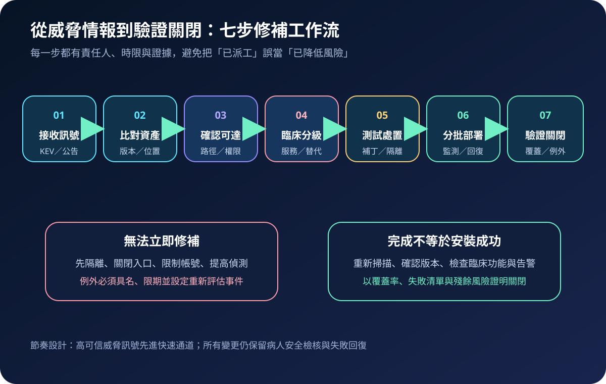
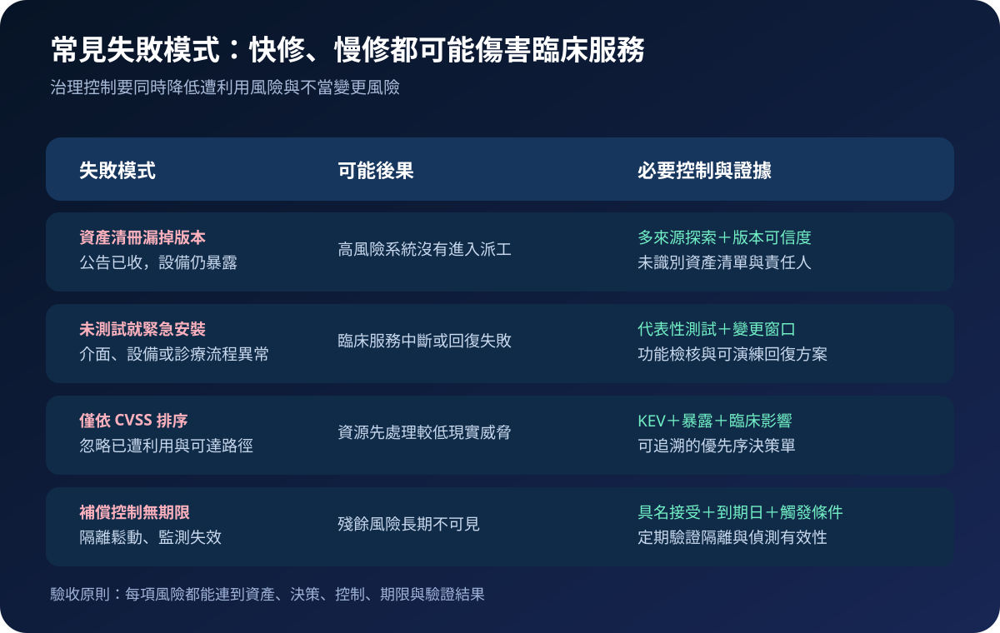

醫療資安國際觀察 · 2026-08-30
已知遭利用漏洞如何排進醫療修補順序：從 KEV 到臨床驗證
作者：Dr. William｜醫療資訊與資安治理實務工作者
漏洞數量永遠多於可用維護窗口。醫療機構需要把「已在真實攻擊中遭利用」的訊號，與院內資產版本、攻擊路徑、臨床影響及變更風險合併，才能決定立即修補、先隔離或限期接受例外。
名詞解釋：KEV、CVSS 與補償控制
Known Exploited Vulnerabilities（KEV） 是 CISA 維護的已知遭利用漏洞目錄；它回答漏洞是否已有可靠利用證據。CVSS 描述技術嚴重度，不等同院內實際風險。compensating control 是暫時無法修補時採用的替代控制，例如網路隔離、關閉入口、限制帳號或提高偵測。醫療排序還要納入設備用途、停機容忍度、替代流程與資料完整性。
國際現況與適用邊界
CISA KEV 目錄持續加入具已知利用證據的漏洞；2026 年 8 月 30 日查閱的官方 CSV 最近更新於 8 月 27 日。美國聯邦文職行政機關須依 BOD 22-01 在目錄期限內處置，其他組織則被建議把 KEV 納入優先排序。FDA 醫療設備資安頁面於 2026 年 7 月更新，說明製造商、醫療機構與病人安全之間的共同風險管理。NIST SP 800-40 Rev. 4 則把修補視為降低風險的預防性維護，而非單次工具作業。
法域與效力：CISA 的 BOD 22-01 期限適用於美國聯邦文職行政機關，不是台灣醫院的法定修補期限；FDA 與 NIST 文件也不直接建立台灣義務。台灣醫療機構可採用其威脅導向方法，實際期限仍須依本地規範、主管機關要求、契約、臨床風險與變更能力制定。
規劃：定義資料來源、責任與驗收
治理範圍應涵蓋伺服器、端點、網路設備、醫療設備、雲端元件與遠端維運入口。資安團隊負責威脅訊號及暴露判定；系統與臨床工程確認版本、測試及回復；臨床服務負責人判定停機與替代流程；風險權責人核准例外。驗收指標可包含 KEV 比對覆蓋率、完成版本確認時間、期限內處置率、部署失敗率、未識別資產數及逾期例外數。

實作：建立可回復的快速處置通道
- 接收與正規化：匯入 KEV、供應商公告及院內偵測，統一 CVE 與產品版本。
- 資產比對：以清冊、掃描、採購及網路觀測交叉確認；無法判定者列為待查風險。
- 情境分級：確認對外暴露、權限、橫向路徑、臨床用途與替代流程。
- 選擇處置：安排補丁、升級、隔離或停用；先完成代表性環境測試與回復計畫。
- 分批部署：由低衝擊區域開始，監測功能、效能、安全告警及臨床異常。
- 驗證關閉：重新確認版本、覆蓋率與殘餘例外，不能只以工單完成判定結案。
風險：緊急不代表跳過病人安全
資產清冊不完整會造成假性結案；僅依 CVSS 排序可能忽略真實利用；未測試的緊急更新可能中斷診療；補償控制若沒有到期日則容易永久化。每項例外應記錄責任人、臨床理由、控制有效性、重評日期與觸發條件。

可執行清單
- KEV 與供應商公告是否每日自動比對可驗證的資產版本？
- 無法判定版本或擁有人的資產是否進入具名追蹤？
- 修補排序是否同時包含利用證據、可達路徑與臨床影響？
- 緊急變更是否有代表性測試、臨床窗口及失敗回復？
- 補償控制是否有監測證據、到期日與重新評估條件？
- 結案是否以版本、覆蓋率、功能檢核與例外清單驗證？
來源
- CISA｜Known Exploited Vulnerabilities Catalog（目錄最近更新：2026-08-27；查閱：2026-08-30）
- CISA｜BOD 22-01: Reducing the Significant Risk of Known Exploited Vulnerabilities（發布：2021-11-03；查閱：2026-08-30）
- U.S. FDA｜Cybersecurity（內容更新：2026-07-06；查閱：2026-08-30）
- NIST｜SP 800-40 Rev. 4, Guide to Enterprise Patch Management Planning（發布：2022-04；查閱：2026-08-30）
內容說明
本文依健康台灣深耕計畫相關治理內容整理，並參考 CISA、FDA 與 NIST 公開資料，提出台灣醫療機構可採用的威脅導向漏洞排序與安全變更框架；不取代主管機關正式公告、法律意見、製造商指示或個案臨床決策。